Class 10 Social Science (SST) Notes
Interactive CBSE Class 10 Social Science (SST) notes from Notesflix 101. They follow the CBSE syllabus and NCERT textbook for Class 10. Each chapter is broken into short parts with easy explanations, picture stories, flash cards, quizzes and board-style exam questions with model answers. All 36 parts open with a password from Notesflix 101.
Chapters
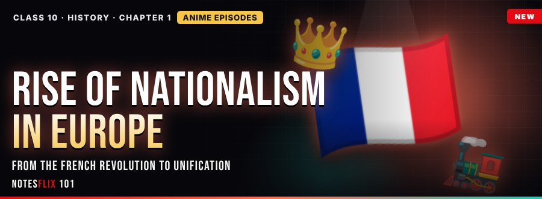
History 1: The Rise of Nationalism in Europe
How Europe turned from kingdoms into nation-states, told as an anime series.
- Birth of the Nation (1789–1815) — Part 1PASSWORD — Textbook-style opener, an explained anime episode, manga panels and memory codes: French Revolution, Napoleonic Code, liberal nationalism, Zollverein and the Treaty of Vienna. (35 min)
- Europe on Fire (1830–1848) — Part 2PASSWORD — July Revolution, Greek independence, Romanticism and language, hunger and hardship, and the 1848 revolution of the liberals (Frankfurt Parliament), with an explained anime episode and memory codes. (35 min)
- Nations Unite (1859–1914) — Part 3PASSWORD — Unification of Germany and Italy, nation-building in Britain, Marianne and Germania, and the Balkan powder keg that led to the First World War. (40 min)
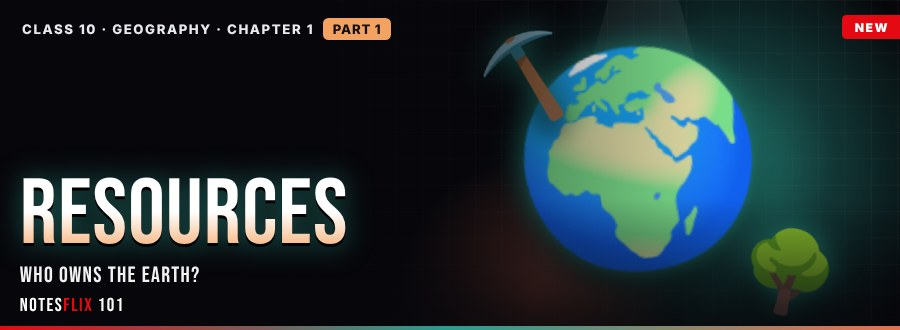
Geography 1: Resources and Development
Air, water, soil and coal: how resources are classified, owned and planned, told as an anime series.
- Who Owns the Earth? (Resources and Planning) — Part 1PASSWORD — Resources and how we classify them, biotic and abiotic, renewable and non-renewable, ownership at four levels, stock and reserve, planning and conservation, with an explained anime episode and memory codes. (35 min)
- Holding the Soil (Land and Soil) — Part 2PASSWORD — Land use categories, soil types of India, causes of soil erosion, and conservation methods such as contour ploughing, terraces, strip cropping and shelter belts. (35 min)
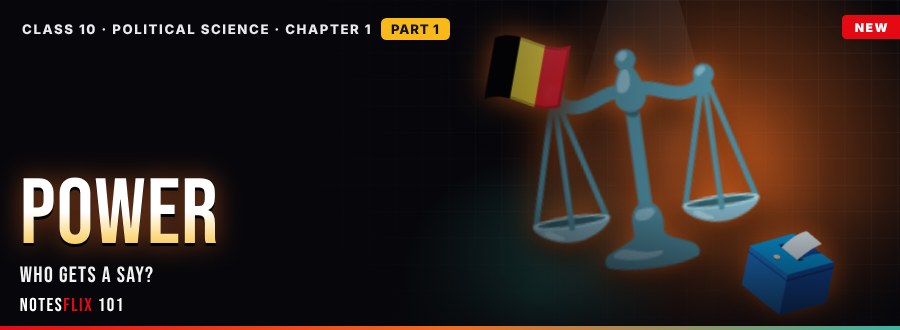
Political Science 1: Power-sharing
Who gets a say?
- Share the Power — Part 1PASSWORD — Power-sharing in Belgium and Sri Lanka, its forms, reasons and proportional sharing. (35 min)
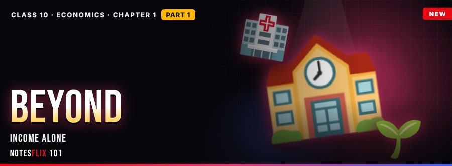
Economics 1: Development
Goals beyond income
- Beyond the Number — Part 1PASSWORD — Development goals beyond income, national and per capita income, the gaps an average hides, and sustainable development. (35 min)
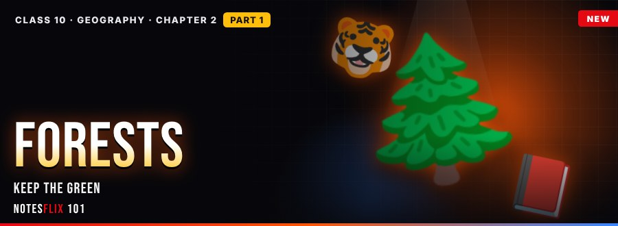
Geography 2: Forest and Wildlife Resources
Forests, tigers and the Red Data Book: how India classifies, loses and protects its green cover.
- The Forest Keepers (Forest and Wildlife) — Part 1PASSWORD — Forest types (reserved, protected, unclassed, sacred groves), endangered wildlife and the Red Data Book, causes of forest loss, and conservation tools such as the Wildlife Protection Act and Project Tiger. (35 min)
Political Science 2: Federalism
Two levels, one nation
- Two Levels, One Nation — Part 1PASSWORD — Meaning of federalism, the Union, State and Concurrent lists, revenue sharing and federalism in practice. (35 min)
- Power to the Village — Part 2PASSWORD — Panchayati Raj, urban local bodies, reserved seats and challenges of decentralisation. (35 min)
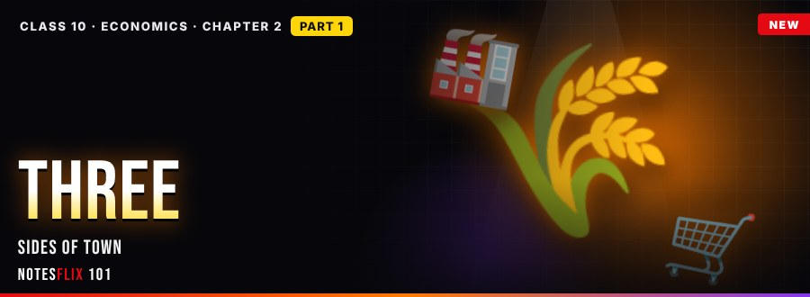
Economics 2: Sectors of the Indian Economy
Three sectors
- Three Sides — Part 1PASSWORD — The primary, secondary and tertiary sectors, what each covers, and how their shares of output and jobs have changed. (35 min)
- Safety Net — Part 2PASSWORD — Organised and unorganised work, public and private ownership, and the protections such as minimum wages and social security. (35 min)
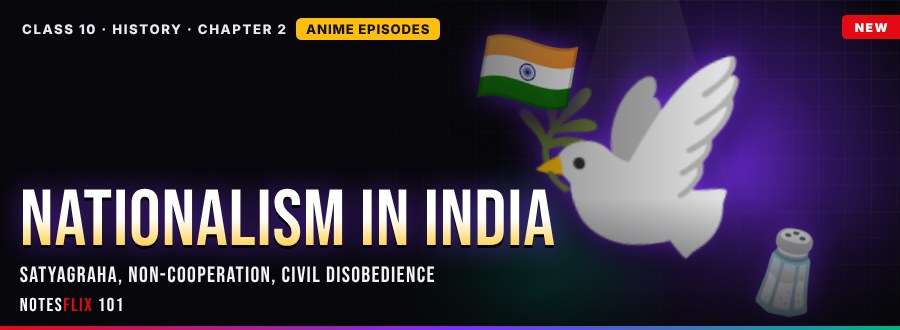
History 2: Nationalism in India
From satyagraha to Purna Swaraj: India's freedom struggle as an anime series.
- India Awakens (1914–1920) — Part 1PASSWORD — First World War effects, satyagraha (Champaran, Kheda, Ahmedabad), Rowlatt Act and Jallianwala Bagh, Khilafat and the Non-Cooperation programme, with map work, an explained anime episode and memory codes. (40 min)
- Many Swarajs (1921–1930) — Part 2PASSWORD — Towns, Awadh peasants, Gudem tribals and Assam tea workers join non-cooperation; Chauri Chaura; Swaraj Party, Simon Commission and Purna Swaraj. (40 min)
- The Salt March and a Sense of Belonging (1930–1934) — Part 3PASSWORD — Salt March to Dandi, spread of Civil Disobedience, Gandhi–Irwin Pact, who joined and why, Ambedkar and the Poona Pact, Muslim alienation, and Bharat Mata, folklore and flags. (45 min)
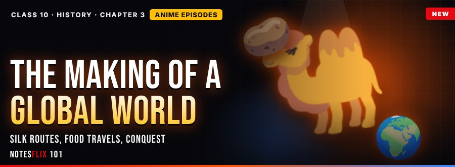
History 3: The Making of a Global World
Silk routes, travelling foods, silver and germs: how the world got connected.
- The World Before Wi-Fi: The Pre-modern WorldPASSWORD — Pre-modern links and cowries, the silk routes, spaghetti and the potato, the Irish famine, and how silver and smallpox made Europe the centre of world trade. (35 min)
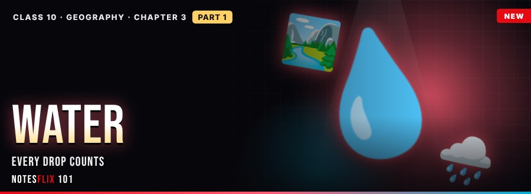
Geography 3: Water Resources
Why water runs short, how dams and rainwater harvesting help, and how we keep every drop.
- Every Drop Counts (Water Resources) — Part 1PASSWORD — Water scarcity from over-use, pollution and uneven rain; multipurpose river projects such as Bhakra Nangal and Hirakud; rainwater harvesting with johads; and conservation through watershed management, drip irrigation and reuse. (35 min)
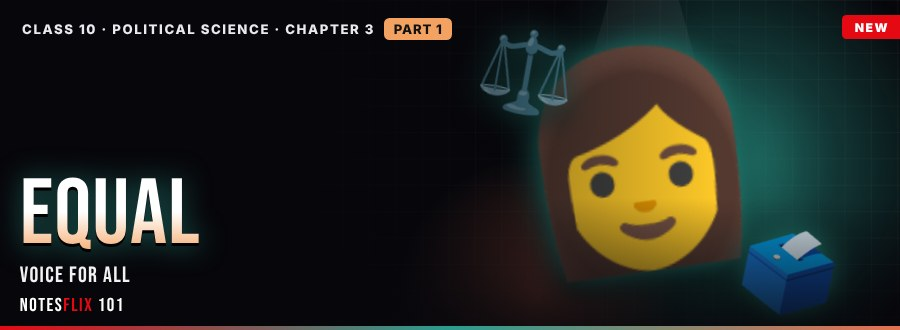
Political Science 3: Gender, Religion and Caste
Equal voice
- Equal Voice — Part 1PASSWORD — Division of labour by gender, women in politics, women's movements and gender justice. (35 min)
- Faith and Fair Play — Part 2PASSWORD — Secularism, communalism, caste in elections and the constitutional fight against caste inequality. (35 min)
Economics 3: Money and Credit
Why money matters
- Coin Flip — Part 1PASSWORD — Barter and its problem, the three functions of money, forms of money today, and how banks turn deposits into credit with interest. (35 min)
- Loan Lines — Part 2PASSWORD — Formal and informal credit, the debt traps of high-interest loans, self help groups and bank linkage. (35 min)
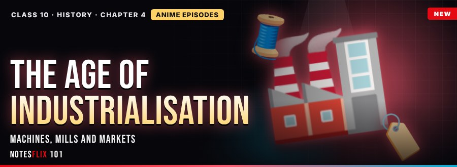
History 4: The Age of Industrialisation
Proto-industry, steam, Indian weavers, mills and markets (periodic assessment).
- Rise of the Machines: The Age of IndustrialisationPASSWORD — Proto-industrialisation, Arkwright and Watt, why hand labour survived, gomasthas and Manchester imports, Indian mills and jobbers, WWI, handlooms and advertising. (45 min)
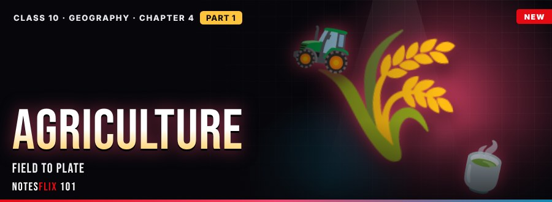
Geography 4: Agriculture
Subsistence and commercial farming, India's three crop seasons, and the inputs that decide yield.
- Field to Plate (Agriculture) — Part 1PASSWORD — Subsistence, intensive, shifting, commercial and plantation farming; kharif, rabi and zaid seasons; where major crops grow; and how seeds, water, fertiliser and labour decide yield. (35 min)
- Seeds, Laws and Milk (Reforms and Revolution) — Part 2PASSWORD — The Green Revolution with high-yield seeds, irrigation and fertiliser; land ceilings, intermediaries, consolidation and Bhoodan; Operation Flood's dairy cooperatives; and the impacts on groundwater, regions and farmers. (35 min)
Political Science 4: Political Parties
Who runs the race
- Party Line — Part 1PASSWORD — What a party is, its four main functions, one-, two- and multi-party systems, and national and state parties in India. (35 min)
- Party Test — Part 2PASSWORD — Dynastic succession, money and muscle power, internal democracy, real choice and the reforms debated for parties. (35 min)
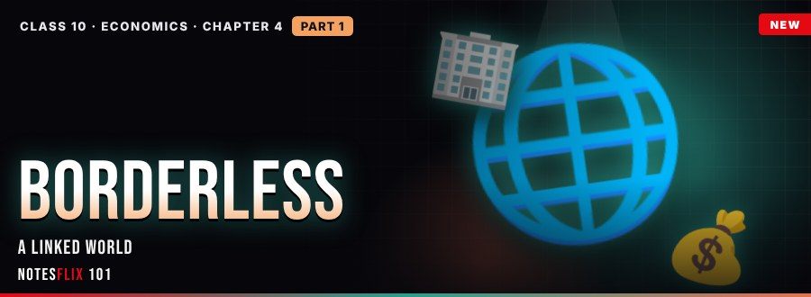
Economics 4: Globalisation and the Indian Economy
A linked world
- Borderless — Part 1PASSWORD — What globalisation means, its drivers, multinational companies, foreign direct investment and outsourcing. (35 min)
- Open Gates — Part 2PASSWORD — Liberalisation, India's 1991 reforms, the World Trade Organization and the debates on the gains and costs of open trade. (35 min)
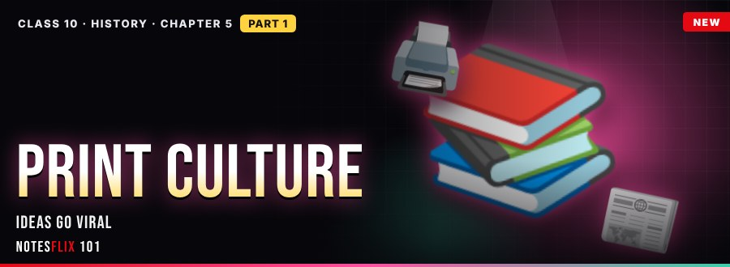
History 5: Print Culture and the Modern World
How print carried ideas across Europe and India, from Gutenberg's press to novels and protest.
- Ideas Go Viral (Print Culture) — Part 1PASSWORD — East Asian print, Gutenberg's press and calculations, the print revolution, the reading mania and the 19th-century reading public, with map work, an explained anime episode and memory codes. (40 min)
- Words Against Empire (Print in India) — Part 2PASSWORD — Print arrives in India, reform and new readers, caste protest in print, and how the colonial state tried to control the press with censorship. (40 min)
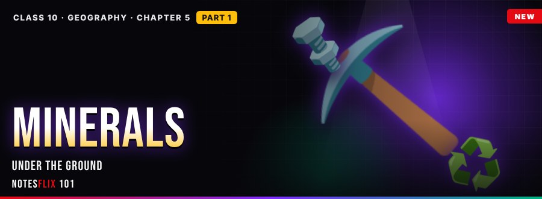
Geography 5: Minerals and Energy Resources
Iron, mica and coal: how minerals are grouped, where they form, what mining costs and how we conserve them.
- Under the Ground (Minerals and Mining) — Part 1PASSWORD — Ferrous, non-ferrous and non-metallic minerals; ores; where minerals occur in igneous, metamorphic and sedimentary rocks and as placer deposits; the impacts of mining; and conservation by recycling and substitution. (35 min)
- Switch On, Switch Smart — Part 2PASSWORD — Conventional and non-conventional energy, India's energy mix and energy conservation. (30 min)
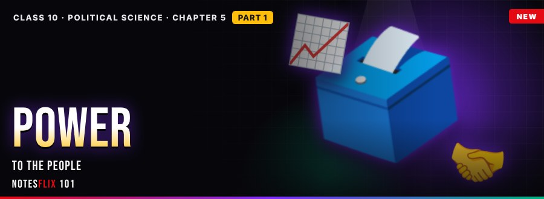
Political Science 5: Outcomes of Democracy
What democracy delivers
- Power to the People — Part 1PASSWORD — Accountable and responsive government, growth that must reach the poor, accommodation of diversity, and dignity for every citizen. (35 min)
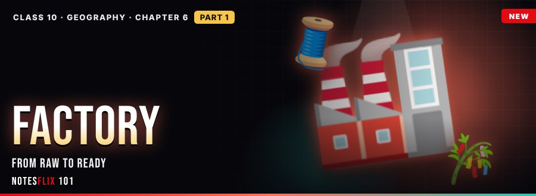
Geography 6: Manufacturing Industries
From raw to ready
- Factory Floor Stories — Part 1PASSWORD — Why manufacturing matters, types of industries, factory location, value added, and cotton and sugar. (35 min)
- Smoke and Steel — Part 2PASSWORD — Steel, cement and other mineral-based industries, types of industrial pollution, and pollution control. (35 min)
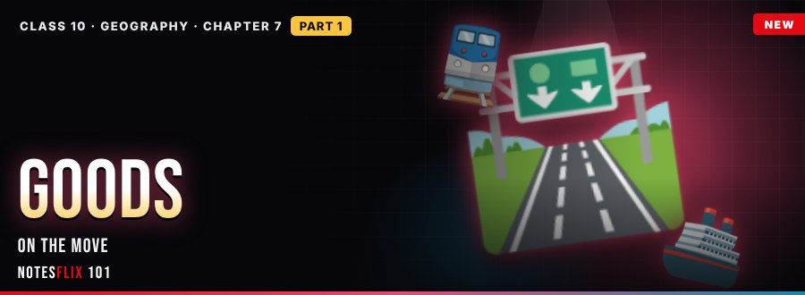
Geography 7: Lifelines of National Economy
Goods on the move
- Goods on the Move — Part 1PASSWORD — Transport modes, the Golden Quadrilateral, communication, and trade through ports. (35 min)
Frequently asked questions
Are the Class 10 Social Science (SST) notes free?
All 36 parts open with a password from Notesflix 101.
Which syllabus do these Class 10 Social Science (SST) notes follow?
They follow the CBSE syllabus and NCERT textbook for Class 10. Every chapter is split into short interactive parts with simple explanations, flash cards, quizzes and board-style exam questions with model answers.
How many chapters are covered?
21 chapters: The Rise of Nationalism in Europe; Resources and Development; Power-sharing; Development; Forest and Wildlife Resources; Federalism; Sectors of the Indian Economy; Nationalism in India; The Making of a Global World; Water Resources; Gender, Religion and Caste; Money and Credit; The Age of Industrialisation; Agriculture; Political Parties; Globalisation and the Indian Economy; Print Culture and the Modern World; Minerals and Energy Resources; Outcomes of Democracy; Manufacturing Industries; Lifelines of National Economy.
Is there a practice test for Class 10 Social Science (SST)?
Yes. The Class 10 Social Science (SST) Practice Marathon has 829 multiple-choice questions taken from the notes: a weekly marathon (30 questions, 20 minutes, the same set for everyone that week), a 10-question sprint, a 100-question mega marathon and chapter practice. A free sample is open to all; the full bank opens with the subject password.
How do I get the password for locked notes?
Email support@notesflix101.com with your name, class, school and the Gmail ID you sign in with. The same password opens every locked Social Science (SST) note.